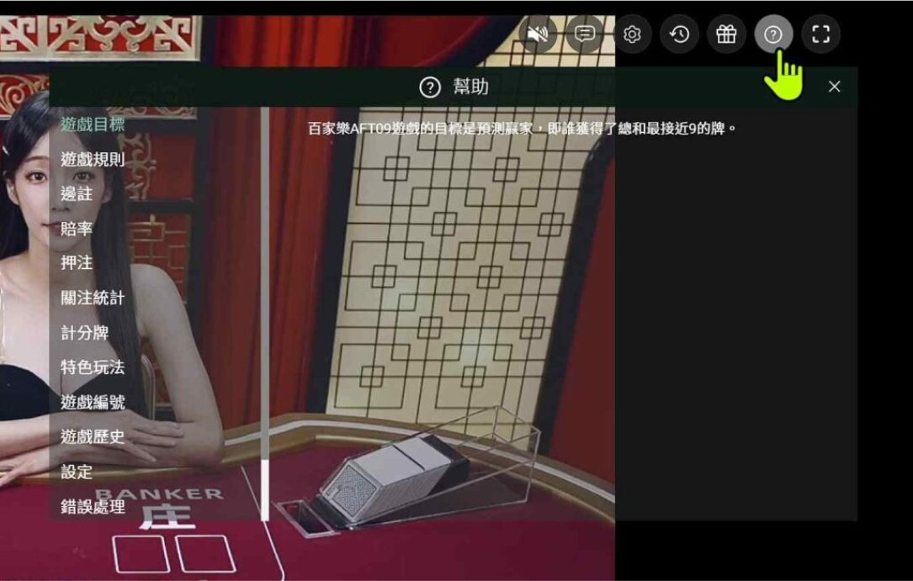
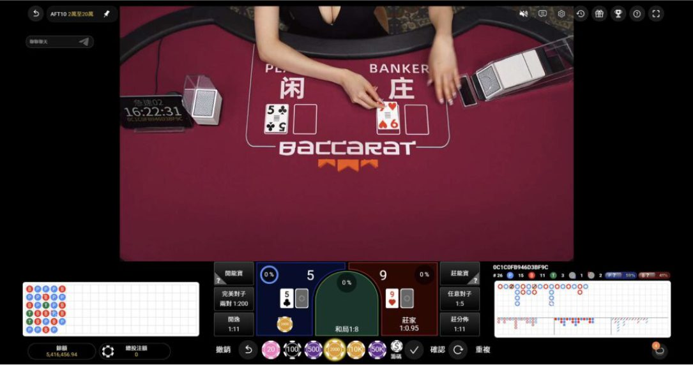
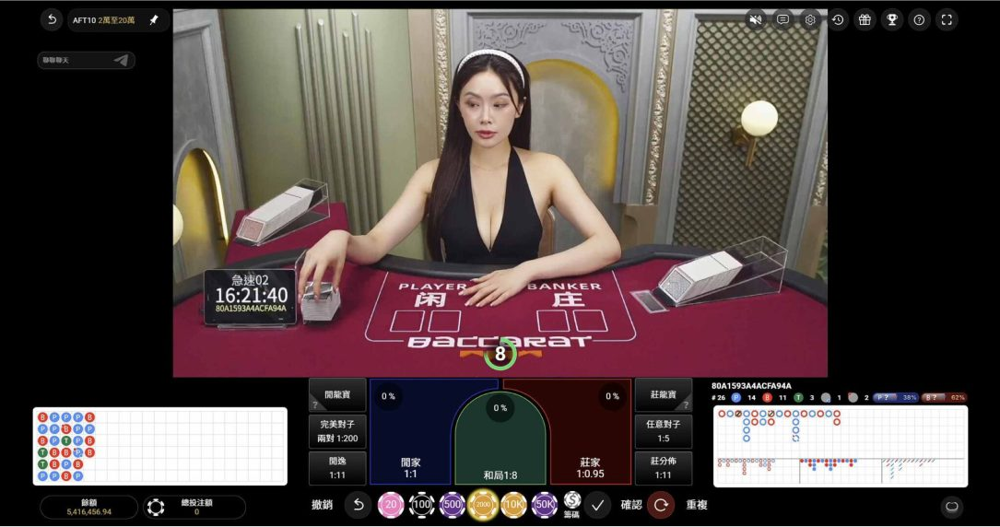
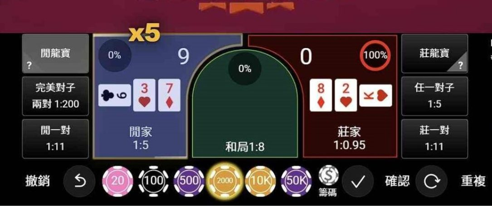

線上百家樂推薦怎麼挑？線上百家樂詐騙辨識、真人美女百家樂與JP真人試玩
想找 線上百家樂推薦 又怕遇到 線上百家樂詐騙？本文整理平台挑選、網站辨識、出入金與客服檢查重點，解析 真人美女百家樂 的真人荷官、桌台介面、莊閒對子與隨機倍率玩法，並附上 JP真人試玩 步驟，快速了解JP真人百家樂特色與操作方式。
線上百家樂推薦怎麼選才安全？
挑選線上百家樂推薦平台時，不要只看優惠高低或遊戲畫面是否吸引人，更重要的是先確認平台資訊、遊戲規則、出入金流程與客服管道是否清楚。尤其準備體驗真人美女百家樂或進行JP真人試玩前，可以先查看網站來源、百家樂玩法說明、下注與結算規則，以及遇到問題時是否有明確客服窗口。把安全性與資訊透明度放在優惠之前，才能降低進入假冒網站或不明平台的風險，也更容易找到適合自己的真人百家樂平台。
先看平台資訊與遊戲規則
選擇線上百家樂推薦平台時，第一步是查看網站是否清楚提供遊戲規則、投注方式、派彩或結算說明，以及相關使用條款。以真人美女百家樂來說，除了莊、閒、和等基本下注區，也可能加入對子、龍寶或倍率等玩法，因此開始投注前應先了解不同下注區的規則，不要只看到高倍率或高派彩就直接下注。

| 檢查項目 | 確認重點 |
|---|---|
| 平台資訊 | 確認網站來源、平台資訊與相關使用條款是否清楚 |
| 遊戲規則 | 查看莊、閒、和及其他下注區域的玩法與結算方式 |
| 附加玩法 | 真人美女百家樂可能提供對子、龍寶或倍率等玩法 |
| 派彩說明 | 下注前先了解各玩法的派彩與實際結算規則 |
| 挑選原則 | 找線上百家樂推薦時，不要只看高倍率或高派彩 |
優惠不是選平台唯一標準
註冊優惠、返水或活動獎勵可以作為比較項目，但不適合成為選擇平台的唯一理由。部分線上百家樂詐騙可能利用誇大的獎金、獲利承諾或限時優惠吸引用戶，因此看到特別高的活動內容時，更應先閱讀條件、限制與規則。真正實用的線上百家樂推薦資訊，應同時比較平台資訊透明度、遊戲內容、客服與使用流程。
| 檢查項目 | 注意重點 |
|---|---|
| 註冊優惠 | 可以比較，但不應只因優惠高就選擇平台 |
| 活動條件 | 先確認活動門檻、限制與相關使用規則 |
| 獲利宣傳 | 遇到保證獲利、穩賺等宣傳應提高警覺 |
| 詐騙風險 | 部分線上百家樂詐騙可能利用誇大優惠吸引用戶 |
| 推薦標準 | 線上百家樂推薦應綜合比較平台資訊、遊戲與客服 |
出入金與客服資訊要確認
挑選線上百家樂推薦平台時，出入金流程與客服服務也是需要確認的重點。建議先了解平台提供哪些入金與提領方式、處理時間、金額限制及相關規則，避免實際操作時才發現條件不符合需求。同時也要確認客服管道是否清楚、遇到問題能否找到協助窗口。進行JP真人試玩或其他真人遊戲前先了解這些資訊，比只看優惠、荷官或遊戲畫面更實際。
| 檢查項目 | 注意重點 |
|---|---|
| 入金方式 | 確認平台目前提供的入金方式與相關規則 |
| 提領流程 | 了解提領方式、處理時間與金額限制 |
| 客服管道 | 確認遇到帳號或操作問題時是否有明確協助窗口 |
| 使用規則 | 操作前先查看平台公布的最新條件與限制 |
| 試玩前確認 | 進行JP真人試玩前先了解平台流程與客服資訊 |
線上百家樂詐騙怎麼判斷？
判斷線上百家樂詐騙不能只看網站外觀，因為假冒平台同樣可能使用精美介面、優惠活動或真人百家樂畫面吸引用戶。比較需要注意的情況包括宣稱穩賺、提供所謂必勝公式、要求透過來源不明的連結登入，以及平台規則、出入金條件或客服資訊交代不清。搜尋線上百家樂推薦時，可以先確認網址來源與平台資訊，再了解遊戲內容與優惠，遇到過度強調高獲利或催促付款的資訊也應提高警覺，避免只因真人美女百家樂畫面或高額優惠就忽略基本風險。

高額獲利保證要小心
百家樂每局都有不確定性，不存在單靠某種牌路或下注公式就能保證獲利的方法。因此如果網站、群組或陌生人士宣稱真人美女百家樂可以穩賺、保證回本，甚至要求先支付費用才能取得所謂必勝技巧，就應提高警覺。正常的遊戲介紹應清楚說明玩法與風險，而不是把線上百家樂推薦包裝成穩定賺錢工具。
| 警示情況 | 判斷重點 |
|---|---|
| 保證獲利 | 宣稱百家樂穩賺、保證回本，應提高警覺 |
| 必勝公式 | 牌路與下注公式都無法保證下一局結果 |
| 付費技巧 | 要求先付款購買必勝技巧或獲利方法，需要特別注意 |
| 真人百家樂 | 真人美女百家樂每局結果仍具有不確定性 |
| 推薦原則 | 線上百家樂推薦應說明玩法與風險，而非宣稱穩定獲利 |
不明連結與假冒平台風險
搜尋熱門遊戲或JP真人試玩時，可能遇到名稱相似的網站、廣告或陌生人傳送的連結，因此不要只憑Logo、網站名稱或畫面相似就判定為同一平台。避免線上百家樂詐騙的一個基本原則，就是不要隨意透過來源不明的網址登入、提供帳號資料或進行付款，應先確認網站來源與相關資訊。
| 風險項目 | 注意事項 |
|---|---|
| 不明連結 | 不要隨意點擊陌生訊息、廣告或群組提供的網址 |
| 假冒網站 | 網站名稱、Logo或畫面相似，不代表就是同一平台 |
| 帳號資料 | 確認網站來源前，不要隨意提供帳號或個人資料 |
| 付款要求 | 透過來源不明的網址要求付款時應提高警覺 |
| 試玩連結 | 搜尋JP真人試玩時，也應先確認網站與連結來源 |
| 詐騙防範 | 確認網址與平台資訊，是降低線上百家樂詐騙風險的基本步驟 |
入金前先確認平台資訊
準備入金前，可以再次檢查網站名稱、網址來源、遊戲規則、客服管道、出入金條件與相關限制。如果平台資訊模糊、付款方式異常，或客服不斷催促入金，都不適合只因優惠而忽略風險。好的線上百家樂推薦內容應協助玩家先完成這些檢查，而不是直接催促註冊或投注。
| 確認項目 | 入金前檢查重點 |
|---|---|
| 網站來源 | 確認平台名稱與目前使用的網址來源 |
| 遊戲規則 | 確認下注、結算與相關使用規則是否清楚 |
| 出入金條件 | 先查看入金、提領方式與相關限制 |
| 客服管道 | 確認遇到帳號、付款或操作問題時有明確協助窗口 |
| 異常情況 | 平台資訊模糊、付款方式異常或持續催促入金時應提高警覺 |
| 推薦標準 | 可靠的線上百家樂推薦應先提供風險與平台檢查資訊 |
真人美女百家樂是什麼？
真人美女百家樂是由真人荷官即時進行發牌與開牌的百家樂遊戲，玩家可以透過直播畫面觀看牌局流程，再從下注介面選擇莊、閒、和及桌台提供的其他玩法。與一般動畫式百家樂相比，真人桌除了基本規則之外，更重視真人荷官、直播畫面、牌路資訊、桌台選擇與下注操作體驗，因此也是許多人搜尋線上百家樂推薦時會比較的重點。不同真人百家樂還可能加入對子、龍寶或隨機倍率等玩法，想先了解操作方式，也可以透過JP真人試玩熟悉真人桌流程。
真人荷官即時發牌
真人美女百家樂最直接的特色就是真人荷官與即時牌局，玩家可以觀看發牌、補牌與開牌流程，再由系統依當局結果完成結算。不同真人桌可能使用不同荷官、桌台編號與遊戲配置，因此選擇時除了外型，也可以觀察畫面清晰度、操作方式以及遊戲資訊是否容易閱讀。

| 真人特色 | 入金前檢查重點 |
|---|---|
| 真人荷官 | 真人美女百家樂由真人荷官進行牌局 |
| 發牌流程 | 可透過直播畫面觀看發牌、補牌與開牌過程 |
| 即時牌局 | 依當局實際牌面結果進行後續結算 |
| 桌台選擇 | 不同真人桌可能有不同荷官、桌號與遊戲配置 |
| 體驗重點 | 可比較直播清晰度、操作方式與遊戲資訊是否容易閱讀 |
真人桌、牌路與下注介面
真人百家樂桌通常會把荷官畫面、莊閒下注區、籌碼、倒數時間與近期牌路集中在同一個介面，方便玩家查看已經發生的牌局與完成投注。牌路主要呈現歷史結果，不能保證下一局走勢，因此進行JP真人試玩或其他真人百家樂時，可以把牌路當作紀錄工具，而不是預測下一局結果的必勝公式。

| 介面功能 | 主要用途 |
|---|---|
| 荷官畫面 | 即時觀看真人荷官與當局發牌流程 |
| 下注區域 | 可查看莊、閒、和及桌台提供的其他下注選項 |
| 籌碼設定 | 選擇適合的籌碼後完成下注操作 |
| 近期牌路 | 整理已經發生的莊、閒、和等歷史結果 |
| 牌路用途 | 進行JP真人試玩時可作為紀錄參考，不能保證下一局走勢 |
荷官互動與遊戲體驗
挑選真人美女百家樂時，荷官確實是遊戲體驗的一部分，但還可以一起比較直播畫面、桌台數量、下注介面、遊戲節奏與特殊玩法。這樣的比較方式比單純用荷官外型決定線上百家樂推薦更完整，也更容易找到符合自己操作習慣的真人桌。

| 比較項目 | 體驗重點 |
|---|---|
| 真人荷官 | 比較不同真人美女百家樂的荷官與真人桌體驗 |
| 直播畫面 | 觀察直播是否清楚、牌面與遊戲資訊是否容易查看 |
| 桌台數量 | 確認是否有多張真人桌可依需求選擇 |
| 下注介面 | 比較籌碼、下注區與牌路資訊是否容易操作 |
| 特殊玩法 | 查看是否提供倍率、對子或其他額外玩法 |
| 推薦方式 | 線上百家樂推薦應綜合比較荷官、桌台、介面與玩法 |
真人美女百家樂推薦｜JP真人
在真人美女百家樂的選擇中，JP真人可以從真人荷官、桌台介面與隨機倍率三個方向了解。玩家進入真人大廳後，可以查看目前開放的荷官與桌台，再從莊、閒、和、對子等下注區進行操作；部分牌局還加入隨機倍率，讓傳統真人百家樂多一種玩法變化。對正在找線上百家樂推薦的玩家來說，可以先比較荷官畫面、桌台數量、下注介面與特殊玩法是否符合自己的習慣，第一次接觸則可以透過JP真人試玩先熟悉完整操作流程。
荷官陣容與特色
JP真人採真人荷官桌台，玩家進入大廳後可以查看目前開放的不同真人桌，再依當下桌台與荷官選擇想進入的牌局。由於實際開放桌數與荷官可能隨時間調整，因此介紹真人美女百家樂時，較適合把重點放在當下可選桌台與真人遊戲體驗，而不是假設固定荷官一定長期在線。
| 真人荷官 | JP真人採真人荷官進行百家樂牌局 |
|---|---|
| 荷官陣容 | 可從大廳查看目前不同真人桌的荷官 |
| 桌台選擇 | 依當下開放的真人桌與荷官選擇想體驗的牌局 |
| 陣容變化 | 實際開放桌數與荷官可能依不同時間調整 |
| 體驗重點 | 選擇真人美女百家樂時，可比較當下荷官與真人桌體驗 |
桌台與下注介面
JP真人桌的操作核心仍是百家樂常見的莊、閒、和等下注區，並搭配籌碼、牌路與其他桌台提供的下注選項。第一次進行JP真人試玩時，可以先了解籌碼設定、下注位置、確認與重複投注等功能，再進一步體驗其他玩法。對一般玩家而言，介面是否容易看懂也是評估線上百家樂推薦的重要條件。
| 基本下注 | 提供莊、閒、和等百家樂常見下注區域 |
|---|---|
| 籌碼設定 | 可選擇籌碼後在對應下注區完成操作 |
| 牌路資訊 | 可查看近期已經發生的莊、閒、和牌局結果 |
| 基本操作 | 進行JP真人試玩時，可先熟悉下注、確認與重複投注 |
| 介面體驗 | 操作是否清楚易懂，可作為線上百家樂推薦的比較項目 |
隨機倍率玩法
JP真人其中一項玩法特色，是在百家樂牌局中加入隨機倍率機制。倍率可能依當局遊戲出現在不同下注區域，但並非每局固定觸發，也不能因上一局出現高倍率就推測下一局結果。想體驗這類真人美女百家樂玩法，可以透過JP真人試玩先觀察倍率出現方式，再依當局畫面與遊戲規則確認結算條件。
| 倍率機制 | JP真人百家樂在部分牌局加入隨機倍率玩法 |
|---|---|
| 出現方式 | 倍率依當局隨機出現，並非每局固定觸發 |
| 出現位置 | 不同牌局的倍率可能出現在不同下注區域 |
| 倍率判斷 | 上一局出現高倍率，不代表下一局會再次出現 |
| 試玩方式 | 可透過JP真人試玩觀察倍率出現方式與當局規則 |
| 遊戲特色 | 隨機倍率是JP真人美女百家樂的玩法特色之一 |
JP真人百家樂有哪些特色？
JP真人百家樂除了真人荷官、莊閒玩法與牌路顯示之外，也提供多桌選擇、不同下注區以及隨機倍率玩法。玩家可以先從大廳查看目前開放的真人桌，再依荷官、牌路與桌台狀態選擇想體驗的牌局；進桌後除了莊、閒、和，也能看到對子等不同下注選項。另一項特色是部分牌局可能隨機出現不同倍率，增加一般真人美女百家樂之外的玩法變化，不過倍率並非每局固定出現，也不代表倍率越高勝率就越高。想了解這些功能，可以先從JP真人試玩實際熟悉介面與規則。
真人荷官與多桌選擇
進入JP真人大廳後，可以先瀏覽目前開放的真人桌與牌局資訊，再選擇想進入的桌台。多桌設計的好處是不用固定停留在單一牌局，玩家可以先查看荷官、牌路與桌台狀態再決定。對正在比較線上百家樂推薦的人來說，桌台選擇與介面便利性都是可以實際觀察的項目。
| 桌台功能 | 實際特色 |
|---|---|
| 真人荷官 | 可先查看目前不同真人桌的荷官再選擇牌局 |
| 多桌選擇 | 大廳提供不同真人桌，不需要固定停留在單一牌局 |
| 牌路資訊 | 進桌前可查看近期莊、閒、和等牌局紀錄 |
| 桌台切換 | 可依目前開放情況選擇不同真人百家樂桌 |
| 推薦重點 | 桌台選擇與介面便利性可作為線上百家樂推薦的比較項目 |
JP倍數百家樂隨機倍率
JP倍數百家樂會在部分牌局加入隨機倍率，增加一般莊閒玩法之外的變化。依文章實測內容，可觀察到X2、X3、X5、X13、X15等不同倍率，但倍率不是每局固定出現，也不代表倍率越高，下注區域的勝率就越高。進行JP真人試玩時，應以當局實際顯示的倍率、下注區域及遊戲規則為準。

| 倍率項目 | 玩法說明 |
|---|---|
| 倍率玩法 | JP倍數百家樂在傳統莊閒玩法中加入隨機倍率 |
| 實測倍率 | 實測畫面可觀察到X2、X3、X5、X13、X15等倍率 |
| 出現方式 | 倍率隨機出現，不保證每局都會觸發 |
| 勝率影響 | 倍率越高不代表下注區域的命中機率越高 |
| 試玩重點 | 進行JP真人試玩時，以當局倍率、下注區域與遊戲規則為準 |
莊閒、對子與附加玩法
除了基本莊、閒、和之外，JP真人桌還可看到閒龍寶、莊龍寶、完美對子、任意對子、閒一對與莊一對等下注選項。不同區域的玩法與結算條件並不完全相同，因此第一次接觸這類真人美女百家樂時，建議先熟悉基本莊閒，再逐步了解附加玩法，不要只因較高倍率就臨時提高投注。

| 下注玩法 | 桌台選項 |
|---|---|
| 基本玩法 | 提供莊、閒、和等百家樂基本下注區域 |
| 龍寶玩法 | 桌台可看到閒龍寶與莊龍寶下注選項 |
| 對子玩法 | 包含完美對子、任意對子、閒一對與莊一對 |
| 玩法規則 | 不同下注區的條件與結算方式並不完全相同 |
| 體驗方式 | 第一次接觸真人美女百家樂可先熟悉莊閒，再了解附加玩法 |
| 投注原則 | 高倍率不代表命中機率提高，不應只因倍率較高臨時加注 |
JP真人試玩怎麼玩？
第一次進行JP真人試玩，可以先從選擇真人百家樂桌開始，查看目前荷官、近期牌路與桌台資訊，進桌後再熟悉籌碼、莊閒下注區、對子玩法與基本操作。完成下注後，可以觀察當局是否出現隨機倍率，再等待真人荷官開牌並確認結算結果。透過完整走過一次選桌、下注、倍率、開牌與結算流程，可以更快了解JP真人的實際玩法，也能從真人荷官、介面與桌台體驗判斷這類真人美女百家樂是否符合自己的需求，作為比較線上百家樂推薦時的參考。
- STEP 1：進入JP真人官網
- STEP 2：點選真人
- STEP 3：選擇想玩的遊戲種類
- STEP 4：開始下注
立即體驗JP真人試玩
挑選線上百家樂推薦時，可以先確認平台資訊、遊戲規則、出入金流程與客服管道，降低遇到線上百家樂詐騙的風險，再進一步比較真人美女百家樂的荷官陣容、真人桌台、下注介面與特殊玩法。JP真人除了真人荷官與多桌選擇，也加入隨機倍率機制，讓傳統莊閒玩法多了不同變化。想先熟悉操作，可以透過JP真人試玩了解籌碼設定、牌路、莊閒下注與倍率機制，再依自己的遊戲習慣決定是否進一步體驗JP真人百家樂。
 免費試玩
免費試玩